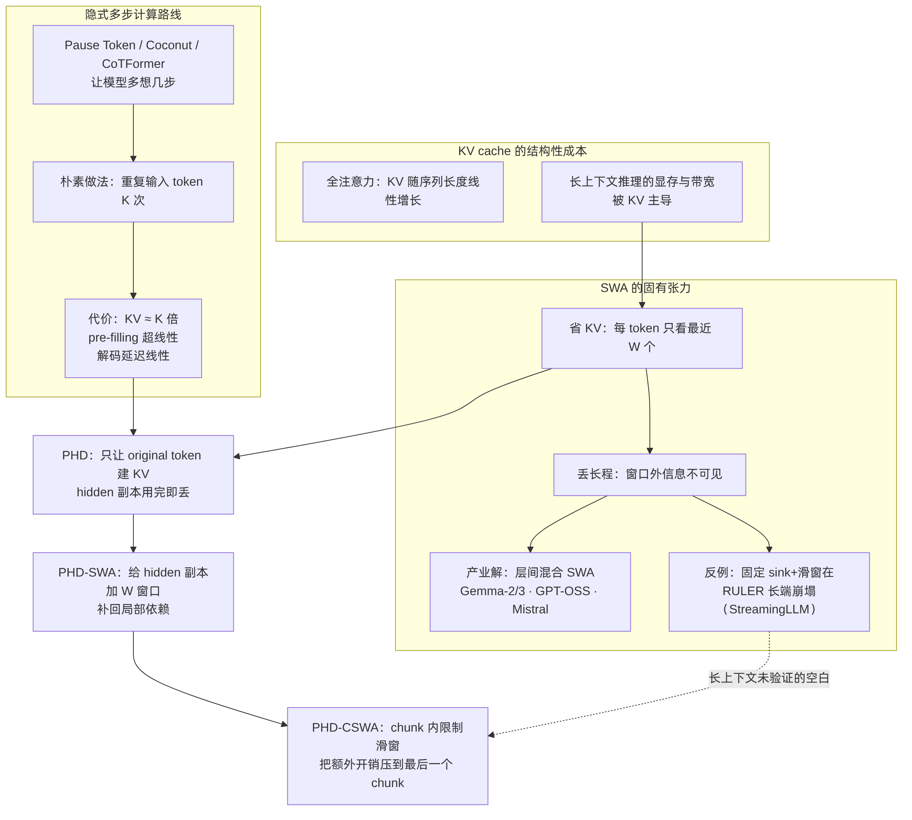
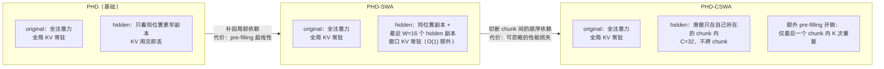
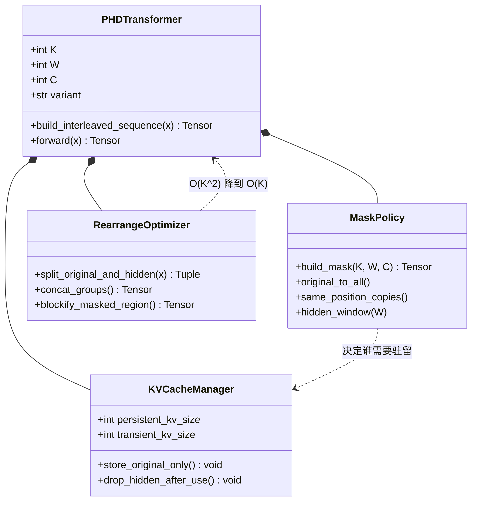
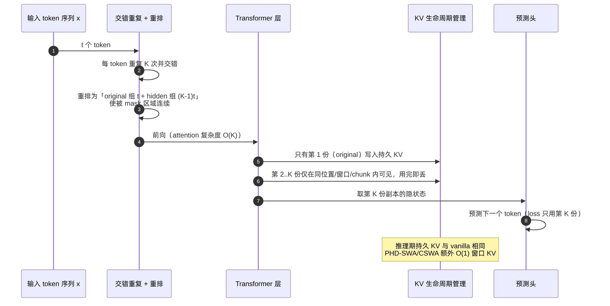
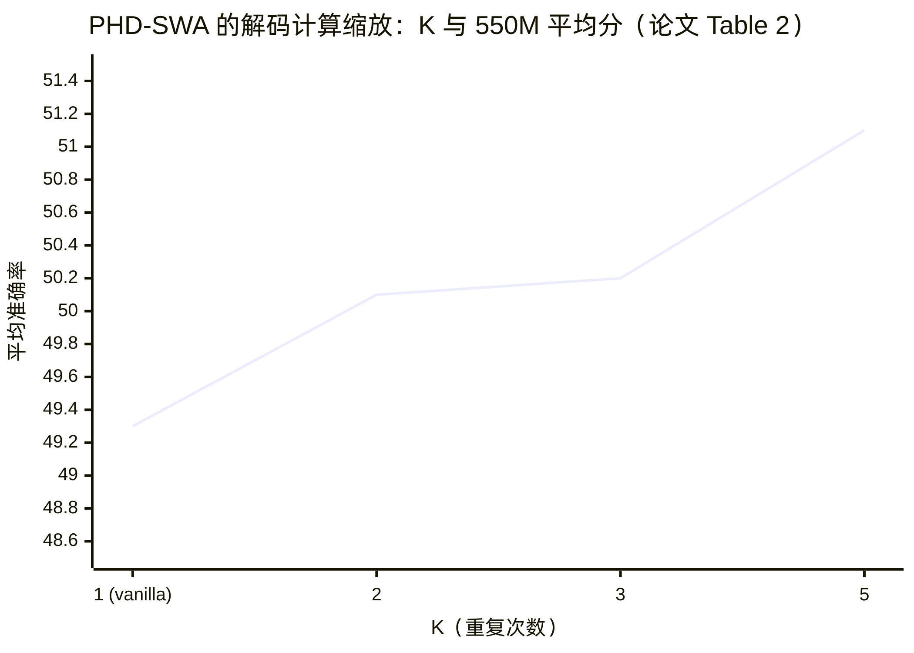
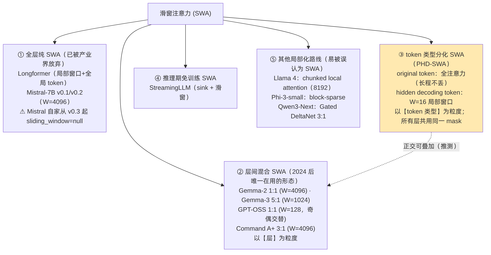
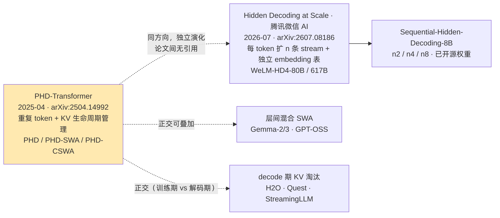

ByteDance Seed PHD-SWA 技术洞察 · 图表预览
对应文档：Seed-PHD-SWA-技术洞察.md ｜ 渲染源：assets/mmd/*.mmd
图 1 · KV 成本 / SWA 张力 / 隐式多步计算三线问题图谱（§1.5）

phd-d1-problem-map
图 2 · PHD / PHD-SWA / PHD-CSWA 三种注意力模式（§2.2.4）

phd-d2-three-masks
图 3 · 类图（§2.5，UML classDiagram）

phd-d3-class
图 4 · 训练/前向时序与 KV 生命周期（§2.6，UML sequenceDiagram）

phd-d4-sequence
图 5 · PHD-SWA 的解码计算缩放（§2.7.2）

phd-d5-k-scaling
图 6 · SWA 的五类形态与 PHD-SWA 的位置（§3.2）

phd-d6-swa-taxonomy
图 7 · 与腾讯 Hidden Decoding 的独立演化关系（§3.4）

phd-d7-lineage